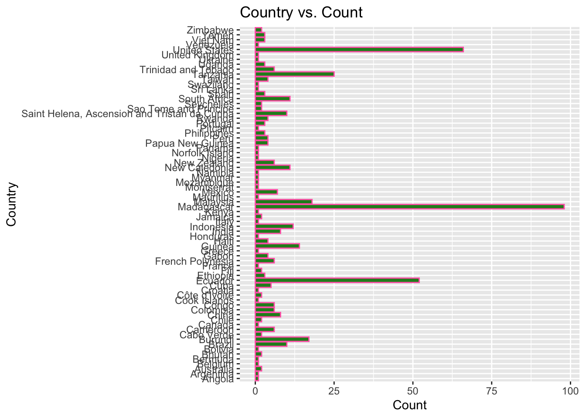

# Get the Data# Read in with tidytuesdayR package # Install from CRAN via: install.packages("tidytuesdayR")# This loads the readme and all the datasets for the week of interest# Either ISO-8601 date or year/week works!tuesdata <- tidytuesdayR::tt_load('2020-08-18')
--- Compiling #TidyTuesday Information for 2020-08-18 ----
--- There are 3 files available ---
--- Starting Download ---
Downloading file 1 of 3: `plants.csv`
Downloading file 2 of 3: `threats.csv`
Downloading file 3 of 3: `actions.csv`
--- Download complete ---
tuesdata <- tidytuesdayR::tt_load(2020, week =34)
--- Compiling #TidyTuesday Information for 2020-08-18 ----
--- There are 3 files available ---
--- Starting Download ---
Downloading file 1 of 3: `plants.csv`
Downloading file 2 of 3: `threats.csv`
Downloading file 3 of 3: `actions.csv`
--- Download complete ---
plants <- tuesdata$plants# Or read in the data manuallyplants <- readr::read_csv('https://raw.githubusercontent.com/rfordatascience/tidytuesday/master/data/2020/2020-08-18/plants.csv')
Rows: 500 Columns: 24
── Column specification ────────────────────────────────────────────────────────
Delimiter: ","
chr (6): binomial_name, country, continent, group, year_last_seen, red_list...
dbl (18): threat_AA, threat_BRU, threat_RCD, threat_ISGD, threat_EPM, threat...
ℹ Use `spec()` to retrieve the full column specification for this data.
ℹ Specify the column types or set `show_col_types = FALSE` to quiet this message.
Rows: 3000 Columns: 8
── Column specification ────────────────────────────────────────────────────────
Delimiter: ","
chr (7): binomial_name, country, continent, group, year_last_seen, red_list_...
dbl (1): action_taken
ℹ Use `spec()` to retrieve the full column specification for this data.
ℹ Specify the column types or set `show_col_types = FALSE` to quiet this message.
Rows: 6000 Columns: 8
── Column specification ────────────────────────────────────────────────────────
Delimiter: ","
chr (7): binomial_name, country, continent, group, year_last_seen, red_list_...
dbl (1): threatened
ℹ Use `spec()` to retrieve the full column specification for this data.
ℹ Specify the column types or set `show_col_types = FALSE` to quiet this message.
Introduction
This data takes in 500 extinct species as of 2020. 19.6% were endemic to Madagascar, 12.8% to Hawaiian islands. This dataset takes in several variables such as name, country, continent, threat, and action. Here, I loaded in a data set for the exploratory data of the Plants data set.
Exploring the data will make it easier to create hypotheses. Here are some interesting questions I asked.
What region country has the most extinct plants?
By taxonomic group, when was the period the species was last seen?
Which threat has the biggest impact on plants becoming extinct.
After finding the biggest threat, what taxonomic group is effected by it the most?
Hypothesis
The biggest threat to plant extinction is pollution. Pollution is one of the biggest effects on our planet today.
Answering Our Questions
plants %>%count(country)
# A tibble: 72 × 2
country n
<chr> <int>
1 Angola 1
2 Argentina 1
3 Australia 2
4 Belgium 1
5 Bermuda 1
6 Bhutan 2
7 Bolivia 1
8 Brazil 10
9 Burundi 17
10 Cabo Verde 2
# … with 62 more rows
plants %>%ggplot() +geom_bar(mapping =aes(x = country), color ="hotpink", fill ="forestgreen") +labs(title ="Country vs. Count", x ="Country", y ="Count") +coord_flip()

By using this count function, it is evident that Madagascar has the highest number of extinct plants with a count of 98. The second highest is United States with a count of 66. The third highest is Ecuador with a count of 52.
# A tibble: 23 × 3
# Groups: group [6]
group year_last_seen n
<chr> <chr> <int>
1 Algae 1960-1979 2
2 Algae Before 1900 1
3 Conifer 1940-1959 1
4 Cycad 1900-1919 1
5 Cycad 1960-1979 1
6 Cycad 1980-1999 1
7 Cycad 2000-2020 5
8 Ferns and Allies 1900-1919 1
9 Ferns and Allies 1960-1979 4
10 Ferns and Allies 2000-2020 3
# … with 13 more rows
Algae was last seen in 1979. Cycad was last seen in 2020. Conifer was last seen in 1959.Ferns and Allies were last seen in 2020. Flowering plants were last seen in 2020.
plants %>%count(threat_AA)
# A tibble: 2 × 2
threat_AA n
<dbl> <int>
1 0 273
2 1 227
plants %>%count(threat_BRU)
# A tibble: 2 × 2
threat_BRU n
<dbl> <int>
1 0 347
2 1 153
plants %>%count(threat_RCD)
# A tibble: 2 × 2
threat_RCD n
<dbl> <int>
1 0 414
2 1 86
plants %>%count(threat_ISGD)
# A tibble: 2 × 2
threat_ISGD n
<dbl> <int>
1 0 419
2 1 81
plants %>%count(threat_EPM)
# A tibble: 2 × 2
threat_EPM n
<dbl> <int>
1 0 455
2 1 45
plants %>%count(threat_CC)
# A tibble: 2 × 2
threat_CC n
<dbl> <int>
1 0 466
2 1 34
plants %>%count(threat_HID)
# A tibble: 2 × 2
threat_HID n
<dbl> <int>
1 0 480
2 1 20
plants %>%count(threat_P)
# A tibble: 2 × 2
threat_P n
<dbl> <int>
1 0 486
2 1 14
plants %>%count(threat_TS)
# A tibble: 2 × 2
threat_TS n
<dbl> <int>
1 0 489
2 1 11
plants %>%count(threat_NSM)
# A tibble: 2 × 2
threat_NSM n
<dbl> <int>
1 0 397
2 1 103
plants %>%count(threat_GE)
# A tibble: 2 × 2
threat_GE n
<dbl> <int>
1 0 482
2 1 18
plants %>%count(threat_NA)
# A tibble: 2 × 2
threat_NA n
<dbl> <int>
1 0 393
2 1 107
The biggest threat on extinct plants is agriculture and aquaculture with a number of 227. This takes in two large groups so it makes sense that this has a big effect. The threat transportation corridor had the lowest threat number of 11. Pollution only has a number of 14 and I was expecting this to be the highest number.
The agriculture and aquaculture threat poses a large threat to the taxonomic group, flowering plant.
Conclusion
Using this data set, I was able to answer all of my questions. Learning about plants and the threats posed to them was very interesting. There are several threats, the highest being agriculture and aquaculture. The most recent plant to go extinct was the cycad. The data set also takes in current actions being taken to prevent plants from going extinct. Some of these actions include land and water protection, species management, law & policy, research and monitoring, and education and awareness. My hypothesis was not supported as it is not the biggest cause of plant extinction, it’s actually one of the lowest.